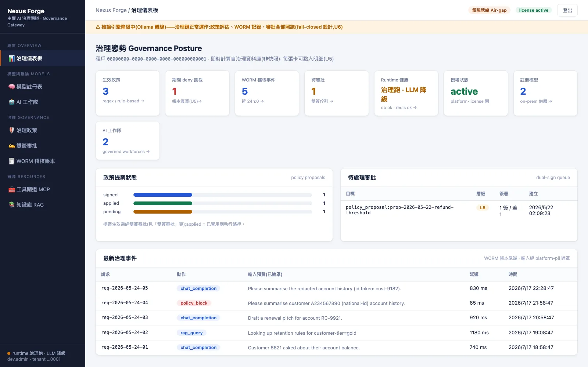
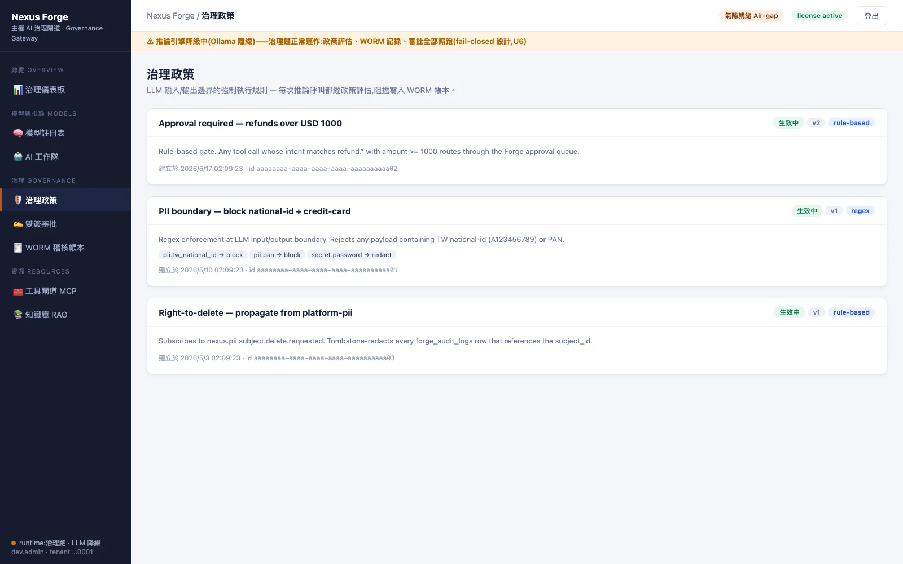
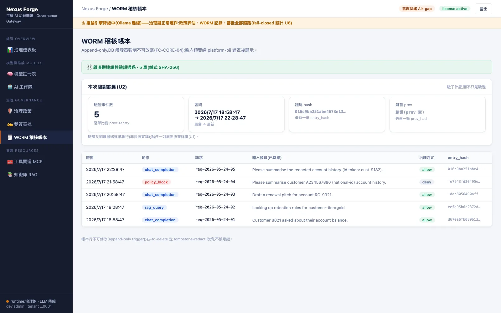
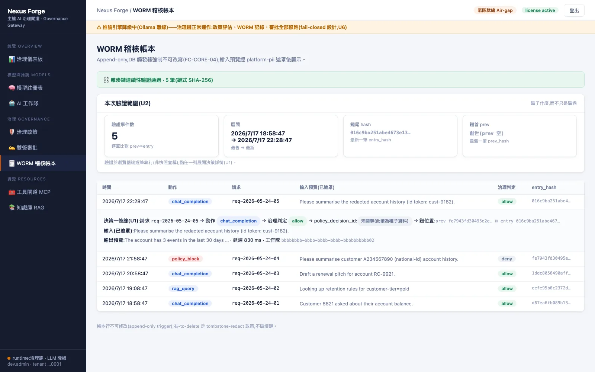
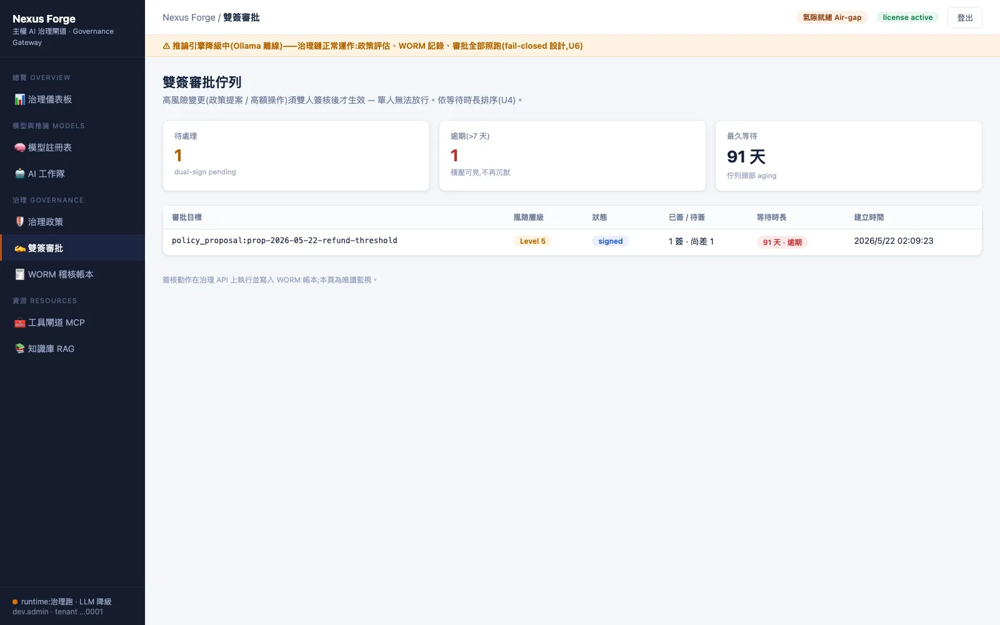
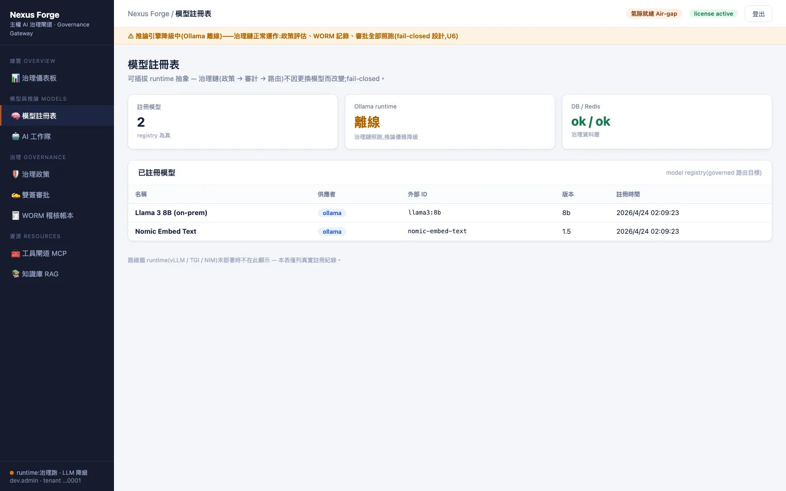

DEFINITION
AI 閘道（LLM Gateway）是企業內所有 AI 請求的必經入口：在請求送到模型之前檢查權限與政策，把請求路由到經核准的模型，並記錄推論、資料存取與工具使用。它是 AI 治理平台最核心的一層。
Forge 是奧洛（Aurobase）AURO NEXUS 產品家族的治理化 AI 閘道，也是 AURO NEXUS AI 治理平台的底座。它以 OpenAI 相容 API 提供服務，既有工具改連線位址即可接入；模型可以只用地端 LLM；每一次推論、知識庫查詢與工具呼叫都寫入雜湊鏈稽核軌跡，並可匯出供稽核人員離線驗證的證據包。
THE PROBLEM
員工把內部文件貼進外部 AI 服務，資料送往哪個模型、是否被保留，事後無從追查。
各部門、各系統各自串接模型與金鑰，權限與紀錄分散，無法統一管理。
被問到「某次 AI 建議引用了哪些資料、經過誰核准」時，只有零散的應用程式紀錄，無法證明未被修改。
CAPABILITIES
Forge 以 OpenAI 相容介面提供服務，既有的 AI 工具與程式庫不需改寫即可接上。
PLATFORM SCREENS
以下畫面擷取自展示環境，租戶與請求內容為示範資料。截圖時刻意讓推論引擎離線，畫面頂端可看到降級提示：政策評估、稽核紀錄與審批照常運作。






MEASURED
以下為本機容器環境（PostgreSQL 16、最小權限資料庫角色）的實測結果。
連續 20 次撤銷知識庫權限，下一次檢索全部被拒。
從撤權到拒絕的中位數時間，最大 2.5 毫秒。
授權規則的兩份實作以 8 個主體 × 4 個知識庫交叉比對，結果完全一致。
含個資的提示送往雲端模型時回 403，雲端端點收到 0 次請求；同一提示改送地端模型則正常回應。
以資料庫最高權限直接修改稽核表，被只能附加的觸發器拒絕；改動內容後重新封印證據包，離線驗證工具回報失敗。
REGULATORY MAPPING
金管會於 2024 年發布〈金融業運用人工智慧（AI）指引〉，以六項核心原則為架構。下表列出與 Forge 功能直接相關的原則與對應做法。
| 指引核心原則 | Forge 的對應做法 |
|---|---|
| 建立治理及問責機制 | 所有 AI 請求先經權限與政策檢查才送往模型；審批流程支援雙人覆核；每次推論寫入雜湊鏈稽核軌跡。 |
| 保護隱私及客戶權益 | 模型可限定只用地端 LLM；自然語言查資料以唯讀身分執行並遮罩個資；個資刪除請求可在稽核紀錄中就地遮罩。 |
| 確保系統穩健與安全 | 多模型備援與金絲雀分流；模型評測閘道；服務拒絕以資料庫超級使用者身分連線。 |
| 落實透明性與可解釋性 | 推論、知識庫引用與工具呼叫逐筆留痕；證據包附獨立驗證工具，可離線查驗；對抗式驗證讓多位審查者反駁同一主張。 |
資料來源：金管會〈金融業運用人工智慧（AI）指引〉（2024 年 6 月 20 日發布）。指引屬行政指導；本表列出的是對應做法，是否符合由主管機關與貴機構法遵認定。六章重點與控制清單見金融業運用 AI 指引怎麼落實。
COMPARISON
| 直接使用公有雲 AI 服務 | 自建地端 LLM | Forge | |
|---|---|---|---|
| 資料存放位置 | 服務商的資料中心 | 企業自有環境 | 企業自有環境 |
| 可用模型 | 該服務商提供的模型 | 自行部署的模型 | 地端 Ollama、OpenAI 相容服務（如 vLLM）、Anthropic，可限定只用地端 |
| 推論前的權限與政策檢查 | 依服務商功能 | 需自行開發 | 內建，所有請求必經 |
| 稽核紀錄 | 依服務商提供 | 需自行開發 | 雜湊鏈稽核軌跡，涵蓋推論、知識庫與工具呼叫 |
| 證據可離線驗證 | — | 需自行開發 | 證據包附獨立驗證工具 |
| 既有 AI 工具接入 | 使用該服務商 API | 依部署方式 | OpenAI 相容 API，改連線位址即可 |
WHAT'S DIFFERENT
模型、知識庫與稽核帳都可部署在客戶自有環境，模型路由可限定只走地端模型。
證據包附離線驗證工具，可在不連網的環境重算每列雜湊與整包封印；整包雜湊須與匯出當下 Forge 回傳或記在稽核帳的值比對。
權限與政策檢查放在推論之前；不符合的請求在送出前就被擋下，不會到達模型。
ON THE PLATFORM
DEPLOYMENT
以容器交付，同一套系統可以放在公有雲的台灣區域、企業自有機房或私有雲；流程、規則與既有系統的介接，可依貴機構需求客製。
以 Helm chart 部署於公有雲的台灣區域（例如 Google Cloud 台灣區域），模型可接雲端服務或自架於雲端 GPU 主機。
部署於企業自有機房或私有雲，模型路由可限定只走地端 Ollama 或 OpenAI 相容服務（如 vLLM）。
權限規則、可用模型、知識庫與工具清單依貴機構規範設定；與既有身分系統的介接由奧洛團隊配合調整。
BEFORE YOU START
以下事項會在導入前，依貴機構的環境與需求逐項確認。
自然語言查資料需在導入時部署查詢引擎。
每個帳本單次最多匯出 2,000 筆，超過時會標示為部分匯出。
多位審查者反駁同一主張的結果會留下紀錄，但不會自動阻擋或放行。
FAQ
AI 閘道是企業內所有 AI 請求的必經入口，負責在推論前檢查權限與政策、把請求路由到經核准的模型，並記錄推論、資料存取與工具使用。Forge 是奧洛推出的治理化 AI 閘道，提供 OpenAI 相容 API、地端模型路由與可離線驗證的稽核軌跡。
主要是資料不需送出企業環境、可依內部規範控管模型與存取權限，適合處理個資與機敏資料的金融、醫療與公部門。Forge 可限定只路由到地端 LLM，並為每次推論留下稽核紀錄。
需要。地端 LLM 解決的是「資料不出機房」，但誰能用哪個模型、能查哪些知識庫、推論紀錄能否證明沒被修改，仍需要治理層。Forge 就是放在地端 LLM 前面的那一層。
Forge 是企業內部所有 AI 請求的閘道：請求先經權限與政策檢查，再送往經核准的模型（可限定只用地端模型），每一步都寫入雜湊鏈稽核軌跡。
多數不需要。Forge 提供 OpenAI 相容 API，支援 OpenAI 介面的工具與程式庫只要改連線位址即可接上。
Forge 的稽核軌跡是雜湊鏈，資料庫層拒絕修改與刪除；匯出的證據包附離線驗證工具，稽核人員可在不連網的環境重算雜湊，並與匯出時記錄的整包雜湊比對。